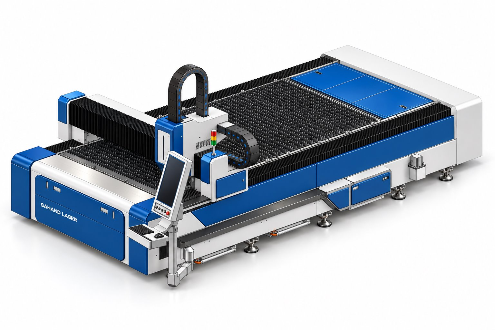
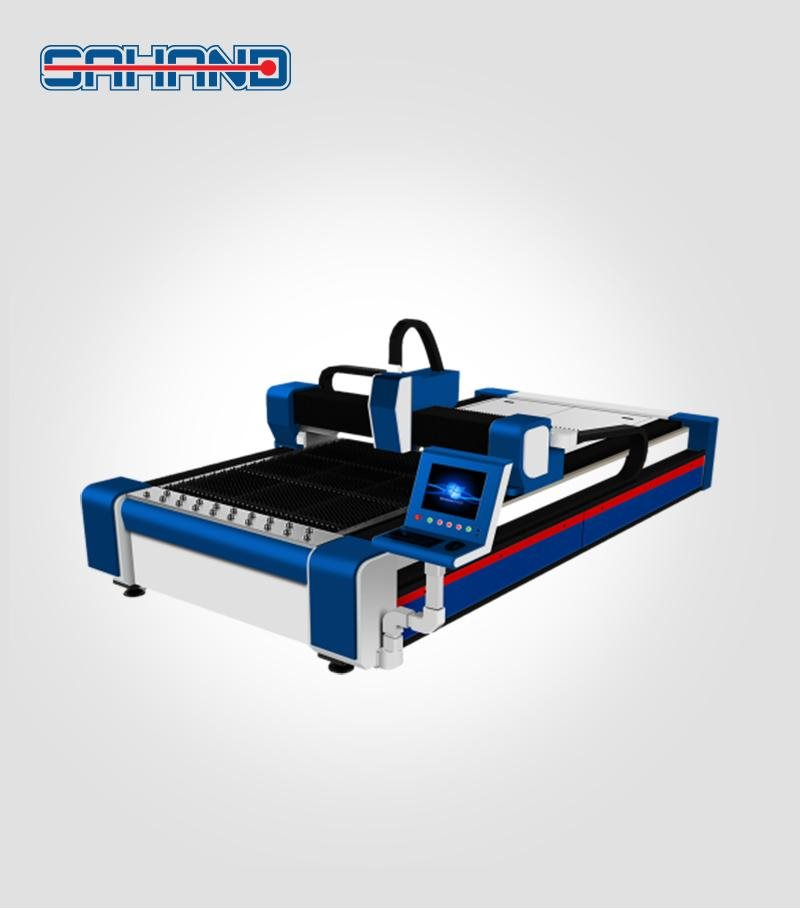

CUT-3015-2
نام و هویت محصول از فهرست ثبتشدهٔ سهند لیزر نقل شده است. اطلاعات سازنده، گزینههای خانواده و تصویر مرجع به معنی تأیید موجودی یا پیکربندی نصبشده نیست.

نام فایل و کد ثبتشده در فهرست شیتها؛ اثباتکنندهٔ پیکربندی نصبشده نیست
سند تطبیق


supplied series photograph or CAD
سند تطبیق


تطبیق کامل نام فایل پس از تبدیل + به فاصله؛ بدون حدس دربارهٔ کد مدل
سند تطبیق
اطلاعات ثبتشده و دامنهٔ آن
| ساختار میز | تک میز دامنهٔ ثبت: user_requested_taxonomy · منبع |
|---|---|
| پیکربندی کابین در نام مدل | بدون کابین در نام مدل دامنهٔ ثبت: user_requested_taxonomy · منبع |
| گروه کاربرد محصول | ورقبر دامنهٔ ثبت: user_requested_taxonomy · منبع |